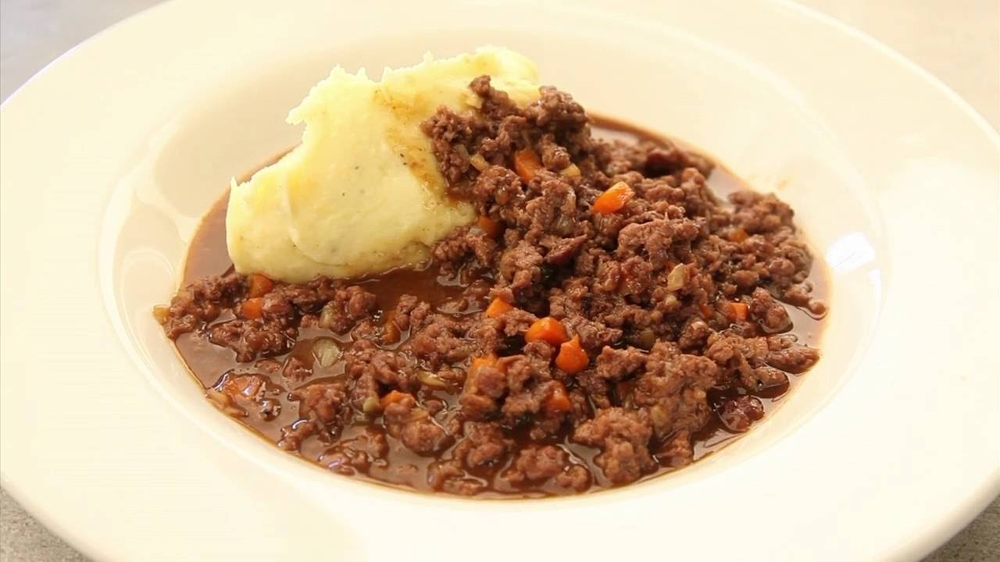

Mince and Tatties

Description
This is simple, but delicious, old fashioned Scottish food.
Ingredients
- 454g beef mince
- 1 onion
- 1 beef stock cube
- 2 carrots
- 400ml of beef gravy made with Bisto powder
- Salt and pepper
- 3 large potatoes
Method
- Place a large saucepan over a medium high heat and brown the mince, breaking it up with a fork to separate it. Crumble in the Oxo cube, add the onions and continue to cook on a high heat until the mince has browned and no traces of pink remain.
- Add the diced carrots, the gravy or beef stock and the Worcestershire sauce, if using. Turn the heat to low-medium, pop on a lid and cook for at least an hour or until the mince is nice and soft and the gravy has thickened. Season to taste. That's all there is to it!
- Cook your tatties, mash them with lots of butter (some people add milk but I don't usually bother) and season to taste with salt and pepper.